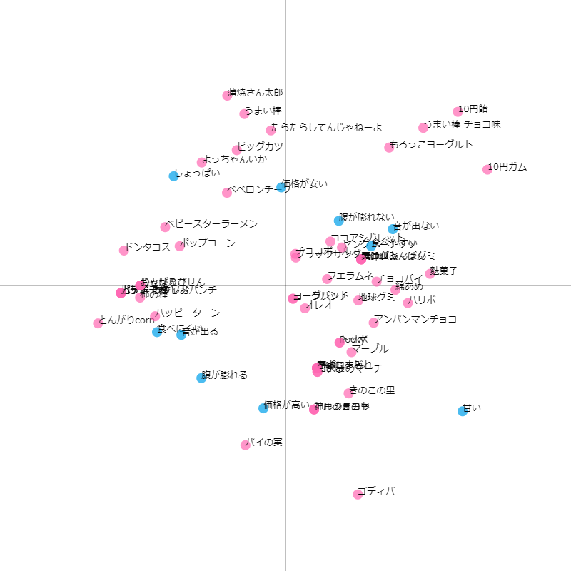

コレスポンデンス分析

csvファイル
説明
図からも分かる通りそれぞれのお菓子のイメージと商品名のマッチ度は高いと言える。
特に注目してほしいのはハッピーターンで、食べにくいのは粉が出るから、音が出るのはスナック特有の
サクサク音のイメージから来ていると予想できる。
１０円ガムやモロッコヨーグルト、うまい棒が安い項目から離れているのは、これらの値が１なのに対して
他のお菓子は3~の値が多いため離れすぎてしまったのだろう。
価格が高いの項目が最も正確に反映されている良いデータになっていると思う。